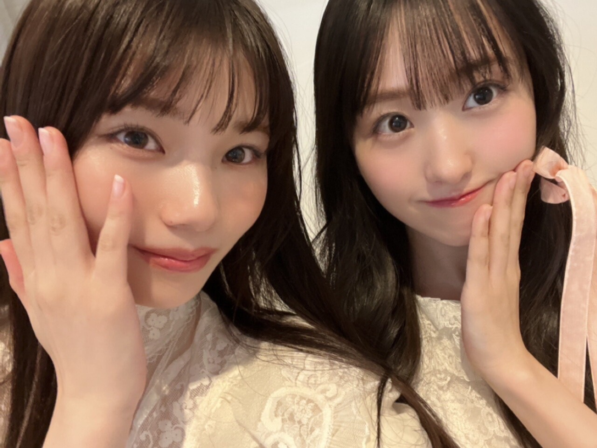
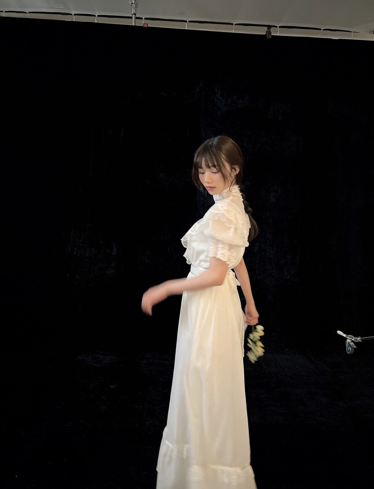
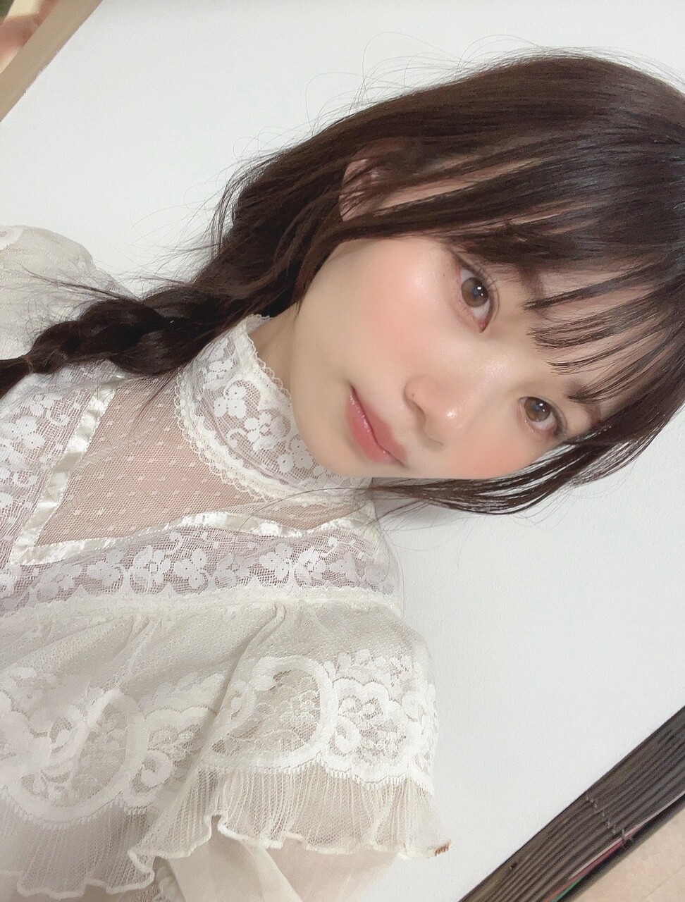
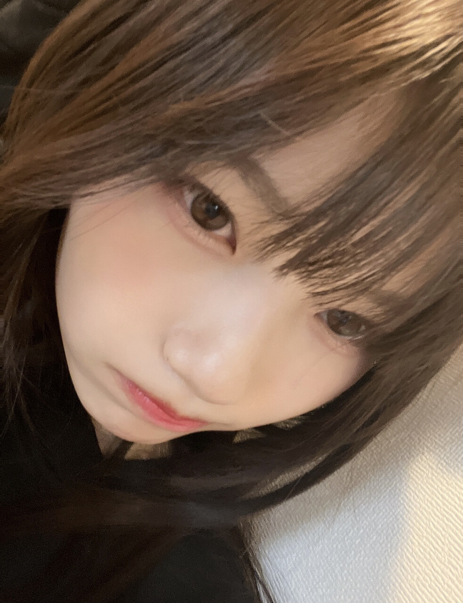

<div class="bd--edit">
<div style="background-color:rgba(0,0,0,0)!important;border-color:rgb(0,0,0)!important;color:rgb(0,0,0)!important"><div style="background-color:rgba(0,0,0,0)!important;border-color:rgb(0,0,0)!important;color:rgb(0,0,0)!important">
<p style='font-family:".Hiragino Kaku Gothic Interface"'><span style='font-family:".HiraKakuInterface-W3"'>こんばんは</span></p><p style='font-family:".Hiragino Kaku Gothic Interface"'><br/></p><p style='font-family:".Hiragino Kaku Gothic Interface"'><br/></p>
<p style='font-family:".Hiragino Kaku Gothic Interface"'><span style='font-family:".HiraKakuInterface-W3"'>愛知県出身</span><span style="font-family:UICTFontTextStyleBody"> 20</span><span style='font-family:".HiraKakuInterface-W3"'>歳の岡本姫奈です！</span></p><p style='font-family:".Hiragino Kaku Gothic Interface"'><span style='font-family:".HiraKakuInterface-W3"'><br/></span></p><p style='font-family:".Hiragino Kaku Gothic Interface"'><br/></p><p dir="auto" style='font-family:".Hiragino Kaku Gothic Interface"'><span style='font-family:".HiraKakuInterface-W3"'> </span></p>
<p style='font-family:".Hiragino Kaku Gothic Interface"'><span style='font-family:".HiraKakuInterface-W3"'>ぽかぽかな天気だね～</span><span style='font-family:".AppleColorEmojiUI"'>☀️</span></p><p style='font-family:".Hiragino Kaku Gothic Interface"'><span style='font-family:".HiraKakuInterface-W3"'><br/></span></p><p dir="auto" style="background-color:rgba(0,0,0,0)!important;border-color:rgb(0,0,0)!important;color:rgb(0,0,0)!important"><span style='font-family:".HiraKakuInterface-W3"'>今日は花粉が凄い🤧</span></p><p style='font-family:".Hiragino Kaku Gothic Interface"'><br/></p><p style='font-family:".Hiragino Kaku Gothic Interface"'><br/></p>
<p style='font-family:".Hiragino Kaku Gothic Interface"'><span style='font-family:".HiraKakuInterface-W3"'>ジャケット暑くて途中で脱いじゃった</span></p><p style='font-family:".Hiragino Kaku Gothic Interface"'><br/></p><p style='font-family:".Hiragino Kaku Gothic Interface"'><br/></p><p style='font-family:".Hiragino Kaku Gothic Interface"'><br/></p>
<p style='font-family:".Hiragino Kaku Gothic Interface"'><span style='font-family:".HiraKakuInterface-W3"'>春服着れるの楽しみだな。</span></p><p style='font-family:".Hiragino Kaku Gothic Interface"'><span style='font-family:".HiraKakuInterface-W3"'><br/></span></p><p style='font-family:".Hiragino Kaku Gothic Interface"'><br/></p><p style='font-family:".Hiragino Kaku Gothic Interface"'><br/></p>
<p style='font-family:".Hiragino Kaku Gothic Interface"'><span style="font-family:UICTFontTextStyleBody">5</span><span style='font-family:".HiraKakuInterface-W3"'>期生の写真集「あの頃、乃木坂にいた」</span></p><p style='font-family:".Hiragino Kaku Gothic Interface"'><span style='font-family:".HiraKakuInterface-W3"'>発売まで</span><span style="font-family:UICTFontTextStyleBody">  </span><span style='font-family:".HiraKakuInterface-W3"'>あと少し！！</span><br/></p><p style='font-family:".Hiragino Kaku Gothic Interface"'><span style='font-family:".HiraKakuInterface-W3"'><br/></span></p><p style='font-family:".Hiragino Kaku Gothic Interface"'><span style='font-family:".HiraKakuInterface-W3"'><br/></span></p><p style='font-family:".Hiragino Kaku Gothic Interface"'><span style='font-family:".HiraKakuInterface-W3"'><br/></span></p><p style='font-family:".Hiragino Kaku Gothic Interface"'><span style='font-family:".HiraKakuInterface-W3"'><br/></span></p><p style='font-family:".Hiragino Kaku Gothic Interface"'><span style='font-family:".HiraKakuInterface-W3"'>オフショット次のブログで沢山載せる</span><span style='font-family:".HiraKakuInterface-W3"'>ね</span><span style='font-family:".AppleColorEmojiUI"'>📸</span><br/></p><p style='font-family:".Hiragino Kaku Gothic Interface"'><span style='font-family:".AppleColorEmojiUI"'><br/></span></p><p style='font-family:".Hiragino Kaku Gothic Interface"'><span style='font-family:".AppleColorEmojiUI"'><br/></span></p><p style='font-family:".Hiragino Kaku Gothic Interface"'><span style='font-family:".AppleColorEmojiUI"'><br/></span></p><p style='font-family:".Hiragino Kaku Gothic Interface"'><span style='font-family:".AppleColorEmojiUI"'><br/></span></p><p style='font-family:".Hiragino Kaku Gothic Interface"'><span style='font-family:".AppleColorEmojiUI"'><br/></span></p><p style='font-family:".Hiragino Kaku Gothic Interface"'><span style='font-family:".AppleColorEmojiUI"'><br/></span></p><p style='font-family:".Hiragino Kaku Gothic Interface"'><span style='font-family:".AppleColorEmojiUI"'><br/></span></p><p style='font-family:".Hiragino Kaku Gothic Interface"'><span style='font-family:".AppleColorEmojiUI"'><br/></span></p><p style='font-family:".Hiragino Kaku Gothic Interface"'><span style='font-family:".AppleColorEmojiUI"'><br/></span></p>
<p style='font-family:".Hiragino Kaku Gothic Interface"'><span style="font-family:UICTFontTextStyleBody">2</span><span style='font-family:".HiraKakuInterface-W3"'>月</span><span style="font-family:UICTFontTextStyleBody">21</span><span style='font-family:".HiraKakuInterface-W3"'>日発売の</span><span style="font-family:UICTFontTextStyleBody">anan</span><span style='font-family:".HiraKakuInterface-W3"'>さんに掲載して頂いてます</span><span style='font-family:".AppleColorEmojiUI"'>👀🤍</span></p><p style='font-family:".Hiragino Kaku Gothic Interface"'><span style='font-family:".AppleColorEmojiUI"'><br/></span></p><p style='font-family:".Hiragino Kaku Gothic Interface"'><span style='font-family:".AppleColorEmojiUI"'><br/></span></p><p style='font-family:".Hiragino Kaku Gothic Interface"'><span style='font-family:".AppleColorEmojiUI"'><br/></span></p>
<p style='font-family:".Hiragino Kaku Gothic Interface"'><span style='font-family:".HiraKakuInterface-W3"'>是非お手に取って頂けると嬉しいです！</span></p><p style='font-family:".Hiragino Kaku Gothic Interface"'><br/></p><p style='font-family:".Hiragino Kaku Gothic Interface"'><br/></p><p style='font-family:".Hiragino Kaku Gothic Interface"'><br/></p>
<p style='font-family:".Hiragino Kaku Gothic Interface"'><span style='font-family:".HiraKakuInterface-W3"'>「春のモテコスメ大賞」</span><span style='font-family:".AppleColorEmojiUI"'>💄</span></p><p style='font-family:".Hiragino Kaku Gothic Interface"'><br/></p>
<p style='font-family:".Hiragino Kaku Gothic Interface"'><span style='font-family:".HiraKakuInterface-W3"'>大好きなコスメに沢山囲まれてとっても楽しい撮影でした！</span></p><p style='font-family:".Hiragino Kaku Gothic Interface"'><br/></p><p style='font-family:".Hiragino Kaku Gothic Interface"'><span style='font-family:".HiraKakuInterface-W3"'></span></p><div dir="auto" style='font-family:".HiraKakuInterface-W3"'></div><p style='font-family:".Hiragino Kaku Gothic Interface"'><span style='font-family:".HiraKakuInterface-W3"'><br/></span></p><p dir="auto" style='font-family:".Hiragino Kaku Gothic Interface"'><span style='font-family:".HiraKakuInterface-W3"'>きゅるきゅるなくーちゃんと</span><span style='font-family:".AppleColorEmojiUI"'>🤎🍫</span></p><p style='font-family:".Hiragino Kaku Gothic Interface"'><span style='font-family:".AppleColorEmojiUI"'><br/></span></p><p style='font-family:".Hiragino Kaku Gothic Interface"'><br/></p><p></p><p style='font-family:".Hiragino Kaku Gothic Interface"'><span style='font-family:".AppleColorEmojiUI"'><br/></span></p><p style='font-family:".Hiragino Kaku Gothic Interface"'><span style='font-family:".AppleColorEmojiUI"'></span></p><div dir="auto" style='font-family:".AppleColorEmojiUI"'></div><div>　</div><div>　</div><div>　</div><div>　</div><div></div><br/><p></p>
<p style='font-family:".Hiragino Kaku Gothic Interface"'><span style='font-family:".HiraKakuInterface-W3"'>このワンピースがとっても可愛くてどこの物か聞いたらビンテージドレスらしいです</span><span style='font-family:".AppleColorEmojiUI"'>👗</span></p><p style='font-family:".Hiragino Kaku Gothic Interface"'><span style='font-family:".AppleColorEmojiUI"'><br/></span></p><p style='font-family:".Hiragino Kaku Gothic Interface"'><span style='font-family:".AppleColorEmojiUI"'><br/></span></p>
<p style='font-family:".Hiragino Kaku Gothic Interface"'><span style='font-family:".HiraKakuInterface-W3"'>素敵～！！</span></p><p style='font-family:".Hiragino Kaku Gothic Interface"'><span style='font-family:".HiraKakuInterface-W3"'><br/></span></p><p style='font-family:".Hiragino Kaku Gothic Interface"'><br/></p><p style='font-family:".Hiragino Kaku Gothic Interface"'><span style='font-family:".HiraKakuInterface-W3"'><br/></span></p><p style='font-family:".Hiragino Kaku Gothic Interface"'><span style='font-family:".HiraKakuInterface-W3"'></span></p><div style='font-family:".HiraKakuInterface-W3"'>
<p style='font-family:".Hiragino Kaku Gothic Interface"'><span style='font-family:".HiraKakuInterface-W3"'>✄</span><span style="font-family:UICTFontTextStyleBody">------------------------------- </span><span style='font-family:".HiraKakuInterface-W3"'>✄</span></p>
</div><p style='font-family:".Hiragino Kaku Gothic Interface"'><span style="font-family:UICTFontTextStyleBody">5</span><span style='font-family:".HiraKakuInterface-W3"'>期生として乃木坂</span><span style="font-family:UICTFontTextStyleBody">46</span><span style='font-family:".HiraKakuInterface-W3"'>に加入し、</span></p><p style='font-family:".Hiragino Kaku Gothic Interface"'><span style='font-family:".HiraKakuInterface-W3"'><br/></span></p>
<p style='font-family:".Hiragino Kaku Gothic Interface"'><span style="font-family:UICTFontTextStyleBody">2</span><span style='font-family:".HiraKakuInterface-W3"'>年が経ちました。</span></p><p style='font-family:".Hiragino Kaku Gothic Interface"'><span style='font-family:".HiraKakuInterface-W3"'><br/></span></p>
<p style='font-family:".Hiragino Kaku Gothic Interface"'><span style='font-family:".HiraKakuInterface-W3"'>過去のオーディション映像を見て</span></p><p style='font-family:".Hiragino Kaku Gothic Interface"'><span style='font-family:".HiraKakuInterface-W3"'><br/></span></p>
<p style='font-family:".Hiragino Kaku Gothic Interface"'><span style="font-family:UICTFontTextStyleBody">17</span><span style='font-family:".HiraKakuInterface-W3"'>歳の響きがとっても恋しくなりました。</span></p>
<p style='font-family:".Hiragino Kaku Gothic Interface"'><span style='font-family:".HiraKakuInterface-W3"'><br/></span></p><p style='font-family:".Hiragino Kaku Gothic Interface"'><span style='font-family:".HiraKakuInterface-W3"'><br/></span></p><p style='font-family:".Hiragino Kaku Gothic Interface"'><span style='font-family:".HiraKakuInterface-W3"'>気づけば</span><span style="font-family:UICTFontTextStyleBody">20</span><span style='font-family:".HiraKakuInterface-W3"'>歳</span><span style="font-family:UICTFontTextStyleBody"> </span><span style='font-family:".HiraKakuInterface-W3"'>。</span></p><p style='font-family:".Hiragino Kaku Gothic Interface"'><br/></p>
<p style='font-family:".Hiragino Kaku Gothic Interface"'><span style='font-family:".HiraKakuInterface-W3"'>ぼーっとしているとどんどん時間は進んでしまうので</span><span style="font-family:UICTFontTextStyleBody"> </span><span style='font-family:".HiraKakuInterface-W3"'>自分の出来ることを早く見つけたいです。</span></p><p style='font-family:".Hiragino Kaku Gothic Interface"'><span style='font-family:".HiraKakuInterface-W3"'><br/></span></p><p style='font-family:".Hiragino Kaku Gothic Interface"'><span style='font-family:".HiraKakuInterface-W3"'><br/></span></p>
<p style='font-family:".Hiragino Kaku Gothic Interface"'><span style='font-family:".HiraKakuInterface-W3"'>自分が分からなくなって、立ち止まってしまったこともあったけど、</span></p><p style='font-family:".Hiragino Kaku Gothic Interface"'><span style='font-family:".HiraKakuInterface-W3"'><br/></span></p><p style='font-family:".Hiragino Kaku Gothic Interface"'><span style='font-family:".HiraKakuInterface-W3"'><br/></span></p>
<p style='font-family:".Hiragino Kaku Gothic Interface"'><span style='font-family:".HiraKakuInterface-W3"'>私の事を「好きだ」と言ってくれる</span></p>
<p style='font-family:".Hiragino Kaku Gothic Interface"'><span style='font-family:".HiraKakuInterface-W3"'>ファンの方々の気持ちに答えたくて</span><span style="font-family:UICTFontTextStyleBody"> </span><span style='font-family:".HiraKakuInterface-W3"'>必死で走り続けた</span><span style="font-family:UICTFontTextStyleBody">2</span><span style='font-family:".HiraKakuInterface-W3"'>年だったなと思います。</span></p><p style='font-family:".Hiragino Kaku Gothic Interface"'><span style='font-family:".HiraKakuInterface-W3"'><br/></span></p><p style='font-family:".Hiragino Kaku Gothic Interface"'><span style='font-family:".HiraKakuInterface-W3"'><br/></span></p><p style='font-family:".Hiragino Kaku Gothic Interface"'><span style='font-family:".HiraKakuInterface-W3"'><br/></span></p>
<p dir="auto" style='font-family:".Hiragino Kaku Gothic Interface"'><span style='font-family:".HiraKakuInterface-W3"'>素敵な先輩や同期に囲まれて、温かいファンの方々に応援して貰えて、姫奈は幸せです。</span></p><p dir="auto" style='font-family:".Hiragino Kaku Gothic Interface"'><span style='font-family:".HiraKakuInterface-W3"'><br/></span></p><p dir="auto" style='font-family:".Hiragino Kaku Gothic Interface"'><span style='font-family:".HiraKakuInterface-W3"'><br/></span></p>
<p style='font-family:".Hiragino Kaku Gothic Interface"'><span style="font-family:UICTFontTextStyleBody">6</span><span style='font-family:".HiraKakuInterface-W3"'>期生オーディション。</span></p><p style='font-family:".Hiragino Kaku Gothic Interface"'><span style='font-family:".HiraKakuInterface-W3"'><br/></span></p><p style='font-family:".Hiragino Kaku Gothic Interface"'><span style='font-family:".HiraKakuInterface-W3"'><br/></span></p>
<p style='font-family:".Hiragino Kaku Gothic Interface"'><span style='font-family:".HiraKakuInterface-W3"'>まだ出来ないことが沢山あるのに、こんな私が先輩になれるのかな</span><span style="font-family:UICTFontTextStyleBody"> </span><span style='font-family:".HiraKakuInterface-W3"'>なんて不安な気持ちと</span></p><p style='font-family:".Hiragino Kaku Gothic Interface"'><span style='font-family:".HiraKakuInterface-W3"'><br/></span></p>
<p style='font-family:".Hiragino Kaku Gothic Interface"'><span style='font-family:".HiraKakuInterface-W3"'>新しい出会いにドキドキな気持ちがあります。</span></p>
<p style='font-family:".Hiragino Kaku Gothic Interface"'><span style='font-family:".HiraKakuInterface-W3"'><br/></span></p><p dir="auto" style='font-family:".Hiragino Kaku Gothic Interface"'><span style='font-family:".HiraKakuInterface-W3"'>大変なことも、乗り越えなきゃいけない事も</span><span style='font-family:".HiraKakuInterface-W3"'>沢山あるけど、</span></p><p style='font-family:".Hiragino Kaku Gothic Interface"'><span style='font-family:".HiraKakuInterface-W3"'><br/></span></p><p style='font-family:".Hiragino Kaku Gothic Interface"'><span style='font-family:".HiraKakuInterface-W3"'><br/></span></p>
<p style='font-family:".Hiragino Kaku Gothic Interface"'><span style='font-family:".HiraKakuInterface-W3"'>私は今この場所に居られることをすごく感謝しています。</span></p><p style='font-family:".Hiragino Kaku Gothic Interface"'><span style='font-family:".HiraKakuInterface-W3"'><br/></span></p><p style='font-family:".Hiragino Kaku Gothic Interface"'><span style='font-family:".HiraKakuInterface-W3"'><br/></span></p>
<p style='font-family:".Hiragino Kaku Gothic Interface"'><span style='font-family:".HiraKakuInterface-W3"'>やらない後悔より</span><span style="font-family:UICTFontTextStyleBody"> </span><span style='font-family:".HiraKakuInterface-W3"'>やる後悔。</span></p><p style='font-family:".Hiragino Kaku Gothic Interface"'><br/></p>
<p style='font-family:".Hiragino Kaku Gothic Interface"'><span style='font-family:".HiraKakuInterface-W3"'>あの時</span><span style="font-family:UICTFontTextStyleBody"> </span><span style='font-family:".HiraKakuInterface-W3"'>少しの勇気と期待を込めて、</span></p><p style='font-family:".Hiragino Kaku Gothic Interface"'><br/></p>
<p style='font-family:".Hiragino Kaku Gothic Interface"'><span style='font-family:".HiraKakuInterface-W3"'>送信ボタンを押した自分を褒めたいです。</span></p><p style='font-family:".Hiragino Kaku Gothic Interface"'><span style='font-family:".HiraKakuInterface-W3"'><br/></span></p><p style='font-family:".Hiragino Kaku Gothic Interface"'><span style='font-family:".HiraKakuInterface-W3"'><br/></span></p><p style='font-family:".Hiragino Kaku Gothic Interface"'><span style='font-family:".HiraKakuInterface-W3"'><br/></span></p>
<p style='font-family:".Hiragino Kaku Gothic Interface"'><span style='font-family:".HiraKakuInterface-W3"'>私のブログで誰かの背中を少しでも押せてたらいいな。</span></p><p style='font-family:".Hiragino Kaku Gothic Interface"'><span style='font-family:".HiraKakuInterface-W3"'><br/></span></p><p style='font-family:".Hiragino Kaku Gothic Interface"'><span style='font-family:".HiraKakuInterface-W3"'><br/></span></p><p style='font-family:".Hiragino Kaku Gothic Interface"'><span style='font-family:".HiraKakuInterface-W3"'><br/></span></p>
<p style='font-family:".Hiragino Kaku Gothic Interface"'><span style='font-family:".HiraKakuInterface-W3"'>リモートオーディション中</span></p><p style='font-family:".Hiragino Kaku Gothic Interface"'><br/></p>
<p style='font-family:".Hiragino Kaku Gothic Interface"'><span style='font-family:".HiraKakuInterface-W3"'>最後に</span><span style="font-family:UICTFontTextStyleBody"> </span><span style='font-family:".HiraKakuInterface-W3"'>前髪上げて</span><span style="font-family:UICTFontTextStyleBody"> </span><span style='font-family:".HiraKakuInterface-W3"'>一周してと言われ</span></p><p style='font-family:".Hiragino Kaku Gothic Interface"'><span style='font-family:".HiraKakuInterface-W3"'><br/></span></p>
<p style='font-family:".Hiragino Kaku Gothic Interface"'><span style='font-family:".HiraKakuInterface-W3"'>ガチガチにスプレーした前髪を</span><br/></p><p style='font-family:".Hiragino Kaku Gothic Interface"'><span style='font-family:".HiraKakuInterface-W3"'><br/></span></p>
<p style='font-family:".Hiragino Kaku Gothic Interface"'><span style='font-family:".HiraKakuInterface-W3"'>パリパリパリって剥がして</span><span style="font-family:UICTFontTextStyleBody"><span style="font-family:UICTFontTextStyleBody"> </span></span></p><p style='font-family:".Hiragino Kaku Gothic Interface"'><span style="font-family:UICTFontTextStyleBody"><span style="font-family:UICTFontTextStyleBody"><br/></span></span></p>
<p style='font-family:".Hiragino Kaku Gothic Interface"'><span style='font-family:".HiraKakuInterface-W3"'>ぐちゃぐちゃになったので、</span></p><p style='font-family:".Hiragino Kaku Gothic Interface"'><span style='font-family:".HiraKakuInterface-W3"'><br/></span></p>
<p dir="auto" style='font-family:".Hiragino Kaku Gothic Interface"'><span style='font-family:".HiraKakuInterface-W3"'>サラサラ前髪で受ける事をおすすめします</span><span style="font-family:UICTFontTextStyleBody">…</span><span style='font-family:".HiraKakuInterface-W3"'>！！</span></p><div style='font-family:".HiraKakuInterface-W3"'><p style='font-family:".Hiragino Kaku Gothic Interface"'><span style='font-family:".HiraKakuInterface-W3"'><div style='font-family:".HiraKakuInterface-W3"'>
<meta content="text/html; charset=utf-8" http-equiv="Content-Type" style='font-family:".HiraKakuInterface-W3"'/>
<meta content="text/css" http-equiv="Content-Style-Type" style='font-family:".HiraKakuInterface-W3"'/>
<title style='font-family:".HiraKakuInterface-W3"'></title>
<meta content="Cocoa HTML Writer" name="Generator" style='font-family:".HiraKakuInterface-W3"'/>
<style type="text/css">
p.p1 {margin: 0.0px 0.0px 0.0px 0.0px; font: 17.0px '.AppleSystemUIFont'}
span.s1 {font-family: 'Zapf Dingbats'; font-weight: normal; font-style: normal; font-size: 17.00px}
span.s2 {font-family: 'UICTFontTextStyleBody'; font-weight: normal; font-style: normal; font-size: 17.00px}
</style>
<p class="p1" style='font-family:".AppleSystemUIFont"'><span class="s1" style='font-family:"Zapf Dingbats"'>✄</span><span class="s2" style="font-family:UICTFontTextStyleBody">------------------------------- </span><span class="s1" style='font-family:"Zapf Dingbats"'>✄</span></p>
</div><br/></span></p><p style='font-family:".Hiragino Kaku Gothic Interface"'><span style='font-family:".HiraKakuInterface-W3"'>のぎ動画の</span><span style="font-family:UICTFontTextStyleBody"> </span><span style='font-family:".HiraKakuInterface-W3"'>「ひとりでできるもん」</span></p><p style='font-family:".Hiragino Kaku Gothic Interface"'><span style='font-family:".HiraKakuInterface-W3"'>今回はお化け屋敷に挑戦しました</span><span style='font-family:".AppleColorEmojiUI"'>👻</span><br/></p><p style='font-family:".Hiragino Kaku Gothic Interface"'><span style='font-family:".AppleColorEmojiUI"'><br/></span></p><p style='font-family:".Hiragino Kaku Gothic Interface"'><span style='font-family:".AppleColorEmojiUI"'><br/></span></p>
<p dir="auto" style='font-family:".Hiragino Kaku Gothic Interface"'><span style='font-family:".HiraKakuInterface-W3"'>悪霊退散して、めっちゃ頑張ったんだよ～</span><span style='font-family:".AppleColorEmojiUI"'>😭</span></p><p dir="auto" style='font-family:".Hiragino Kaku Gothic Interface"'><span style='font-family:".AppleColorEmojiUI"'><br/></span></p><p style='font-family:".Hiragino Kaku Gothic Interface"'><span style='font-family:".AppleColorEmojiUI"'></span></p><div style='font-family:".AppleColorEmojiUI"'></div><br/><p style='font-family:".HiraKakuInterface-W3"'></p><p style='font-family:".Hiragino Kaku Gothic Interface"'><span style='font-family:".AppleColorEmojiUI"'><div style='font-family:".AppleColorEmojiUI"'></div><br/></span></p>
<p style='font-family:".Hiragino Kaku Gothic Interface"'><span style='font-family:".HiraKakuInterface-W3"'>見てくださると嬉しいです。</span></p>
<p style='font-family:".AppleSystemUIFont"'><span style="font-family:UICTFontTextStyleBody"><a href="https://nogidoga.com/episode/1931?ref=releasetweet_240209" style="font-family:UICTFontTextStyleBody" target="_blank">https://nogidoga.com/episode/1931?ref=releasetweet_240209</a></span></p><p style='font-family:".AppleSystemUIFont"'><br/></p>
</div><div>
<meta content="text/html; charset=utf-8" http-equiv="Content-Type"/>
<meta content="text/css" http-equiv="Content-Style-Type"/>
<title></title>
<meta content="Cocoa HTML Writer" name="Generator"/>
<style type="text/css">
p.p1 {margin: 0.0px 0.0px 0.0px 0.0px; font: 17.0px '.AppleSystemUIFont'}
span.s1 {font-family: 'Zapf Dingbats'; font-weight: normal; font-style: normal; font-size: 17.00px}
span.s2 {font-family: 'UICTFontTextStyleBody'; font-weight: normal; font-style: normal; font-size: 17.00px}
</style>
<p class="p1" style='font-family:".AppleSystemUIFont"'><span class="s1" style='font-family:"Zapf Dingbats"'>✄</span><span class="s2" style="font-family:UICTFontTextStyleBody">------------------------------- </span><span class="s1" style='font-family:"Zapf Dingbats"'>✄</span></p>
</div><br/><p></p>
<p style='font-family:".Hiragino Kaku Gothic Interface"'><span style='font-family:".HiraKakuInterface-W3"'>今月のリアルミーグリも楽しみだな</span><span style='font-family:".AppleColorEmojiUI"'>👀🤍</span></p>
<p style='font-family:".Hiragino Kaku Gothic Interface"'><span style='font-family:".HiraKakuInterface-W3"'>初めてなんですよ～！！りあぐり！！</span><span style='font-family:".AppleColorEmojiUI"'>🫶</span></p>
<p style='font-family:".Hiragino Kaku Gothic Interface"'><span style='font-family:".HiraKakuInterface-W3"'>私服もお顔も気合い入れて行きます</span><span style='font-family:".AppleColorEmojiUI"'>🥳</span></p><p style='font-family:".Hiragino Kaku Gothic Interface"'><span style='font-family:".AppleColorEmojiUI"'><div style='font-family:".AppleColorEmojiUI"'></div><br/></span></p>
<p style='font-family:".Hiragino Kaku Gothic Interface"'><span style='font-family:".HiraKakuInterface-W3"'>どうかな？似合ってる？</span></p>
<p style='font-family:".Hiragino Kaku Gothic Interface"'><span style='font-family:".HiraKakuInterface-W3"'>以上！髪切りたい欲がすごい岡本姫奈でした！！</span></p>
<p style='font-family:".Hiragino Kaku Gothic Interface"'><span style='font-family:".HiraKakuInterface-W3"'>またすぐ会おうね</span></p>
</div>
</div>
</div>